🧑🎨 Rol en UX: UX Researcher (investigación, arquitectura de información, pruebas de usabilidad).
🎯 Objetivo del proyecto: Rediseñar la experiencia móvil de la Biblioteca UPV para facilitar la búsqueda de libros, reserva de salas y renovación de préstamos, reduciendo la fricción actual y mejorando la satisfacción estudiantil.
👥 Público objetivo: Estudiantes y docentes de la UPV que utilizan la biblioteca al menos una vez por semana, con edades entre 18 y 35 años, familiarizados con apps móviles pero frustrados por la complejidad del sistema actual.
⚠️ Principales desafíos: Integrar múltiples funcionalidades (búsqueda, reservas, multas, horarios) en una interfaz móvil sencilla; garantizar accesibilidad para usuarios con poca experiencia digital; y alinear el diseño con la identidad visual de la universidad.
Lead UX Designer
Jesús Emmanuel López Zúñiga
Plataforma
Móvil
Herramientas
Figma, Miro, Google Forms
Estudio de investigación
Plan de investigación
Estudio de usabilidad
Diagrama de afinidad
Identificación de patrones
Identificación de ideas
Presentación de investigación
Se realizaron entrevistas a 5 estudiantes y 2 bibliotecarios, más una encuesta a 45 usuarios. Los principales puntos de dolor fueron: dificultad para encontrar libros (67%), desconocimiento de renovación de préstamos (52%) y abandono de la app por mala navegación (48%).
Conceptos iniciales
Se generaron 3 conceptos:
(1) Dashboard con búsqueda inteligente y recomendaciones.
(2) Navegación por pestañas (catálogo, reservas, perfil).
(3) Asistente virtual.
El concepto (2) fue el mejor valorado por los usuarios. Ver Miro de inspiración.
(1) Dashboard con búsqueda inteligente y recomendaciones.
(2) Navegación por pestañas (catálogo, reservas, perfil).
(3) Asistente virtual.
El concepto (2) fue el mejor valorado por los usuarios. Ver Miro de inspiración.
Bocetos y wireframes
Wireframes digitales
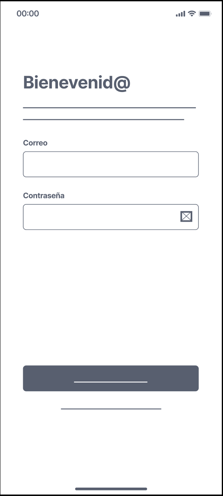
Bienvenida
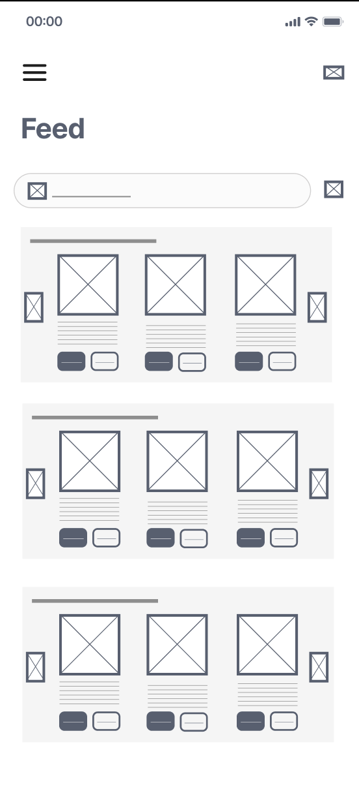
Dashboard
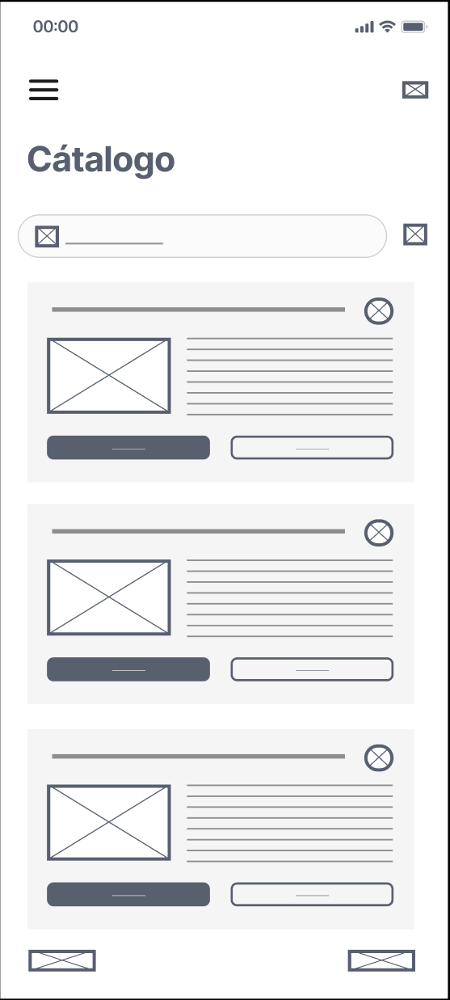
Busqueda

Detalle
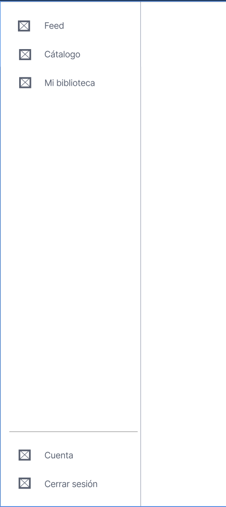
Menú
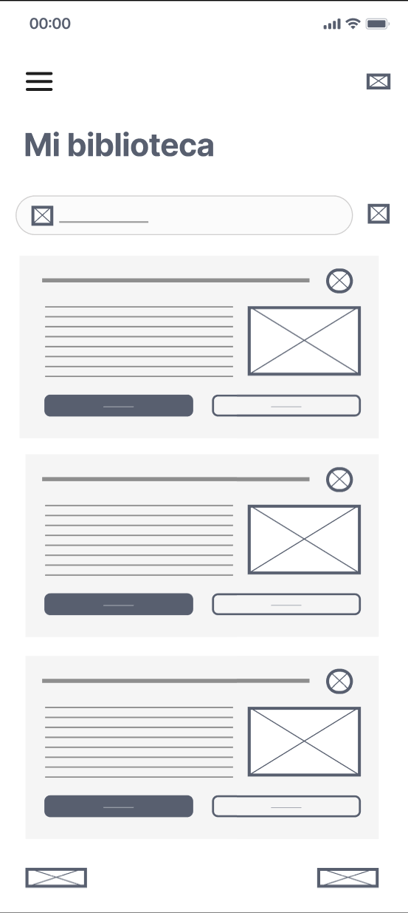
Mi biblioteca
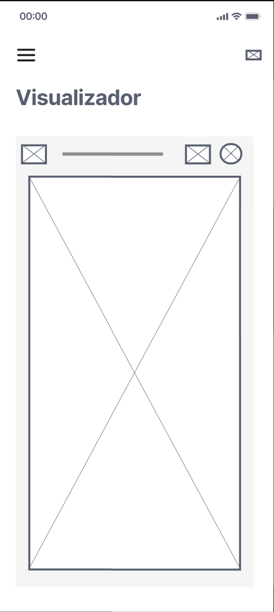
PDF
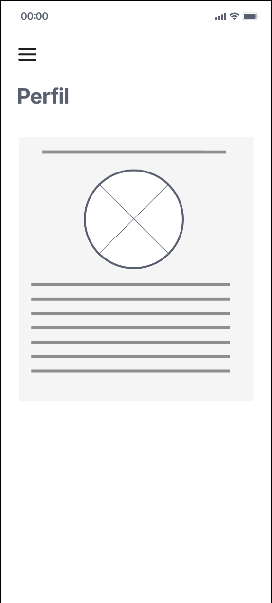
Perfil
Resultados de pruebas de usuario
Se realizaron pruebas de usabilidad con 8 participantes. Tasa de éxito: 85% en tareas de búsqueda (vs 45% en versión anterior). El tiempo promedio para reservar un libro bajó de 3.2 min a 1.4 min. Los comentarios destacaron la claridad de los filtros y la ubicación del botón de renovación. Se iteró en el flujo de pago de multas, simplificando a 2 pantallas. Ver estudio de usabilidad.
Mockups de alta fidelidad
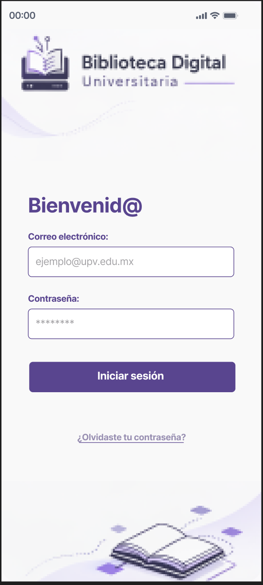
Bienvenida
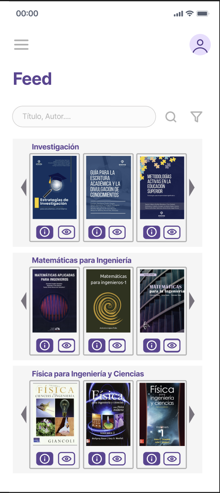
Dashboard
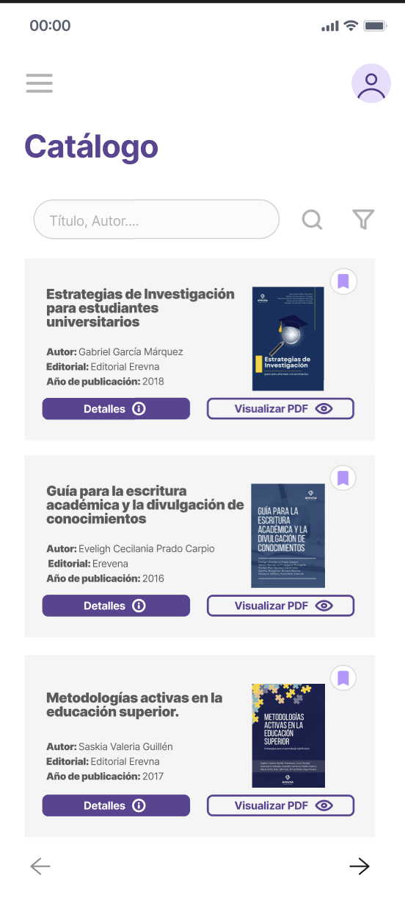
Busqueda
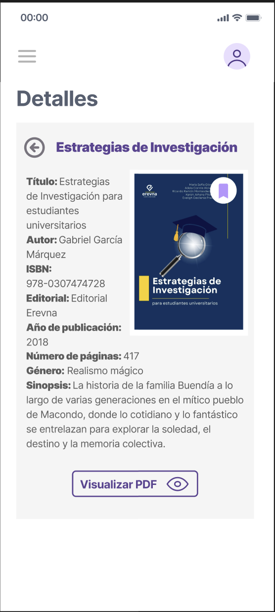
Detalle
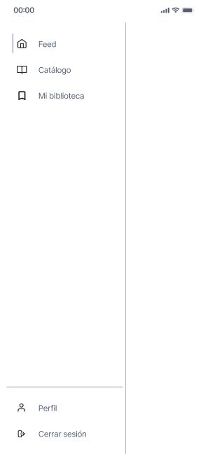
Menú
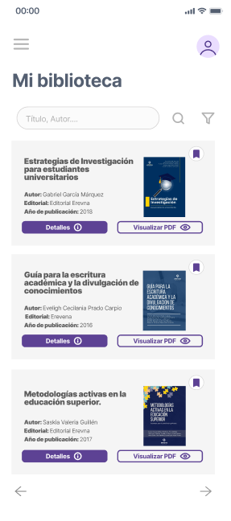
Mi biblioteca
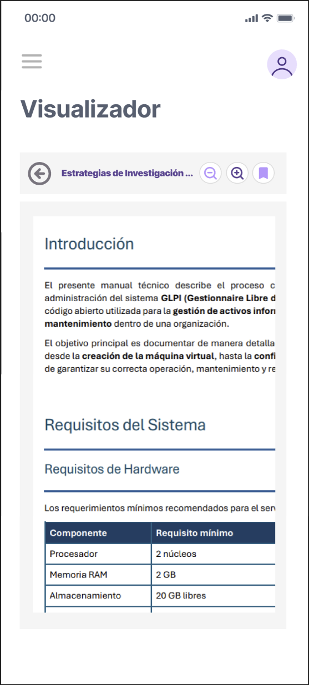
PDF
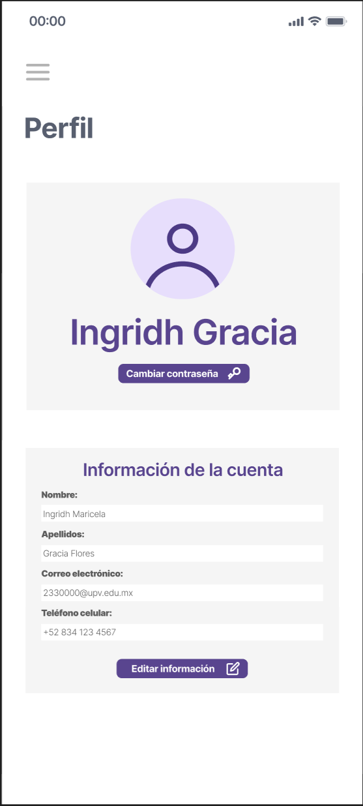
Perfil
Prototipos interactivos
Conclusión y próximos pasos
📌 Aprendizajes: La investigación temprana evitó rediseñar funciones innecesarias. Las pruebas de usabilidad revelaron que los usuarios prefieren gestos simples (swipe) para renovar préstamos.
🔜 Pasos siguientes: Desarrollar la versión tablet, implementar notificaciones push para recordatorios de devolución y realizar pruebas A/B en el flujo de pago de multas.
🔜 Pasos siguientes: Desarrollar la versión tablet, implementar notificaciones push para recordatorios de devolución y realizar pruebas A/B en el flujo de pago de multas.
📄 Currículum profesional
Mi trayectoria en Ingeniería TI, UX Research y diseño de interfaces
Descargar CV (PDF)